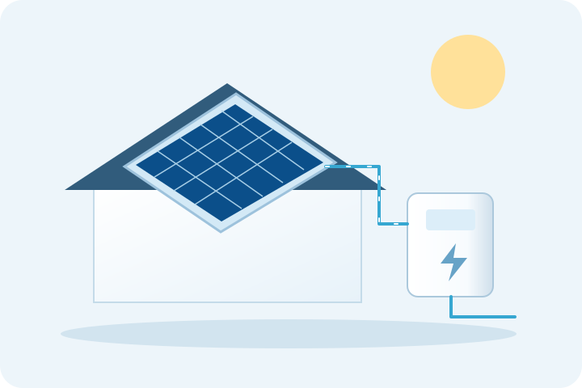

Avaliação das necessidades
Analisamos a utilização prevista, os equipamentos existentes e as condições do local. A solução é proposta após confirmação do tipo de sistema e do âmbito da intervenção.

Avaliamos as suas necessidades e as condições do imóvel para preparar uma proposta de instalação, manutenção ou reparação do sistema solar.
Pedir avaliação
Analisamos a utilização prevista, os equipamentos existentes e as condições do local. A solução é proposta após confirmação do tipo de sistema e do âmbito da intervenção.
Apoiamos a seleção de opções adequadas ao imóvel e ao investimento previsto. Modelos, componentes e disponibilidade são confirmados na proposta.
Avaliamos montagem, ligações e integração com os equipamentos abrangidos. Adaptações e remoção de equipamentos antigos devem constar expressamente do orçamento.
Definimos os trabalhos de manutenção de acordo com o tipo de sistema, o modelo e as indicações do fabricante. A periodicidade é avaliada para o equipamento concreto.
Avaliamos desempenho irregular, sinais de erro e anomalias nos componentes abrangidos. A reparação depende do diagnóstico e da disponibilidade de peças.
Avaliamos o estado dos equipamentos e a viabilidade de manter, reparar ou substituir componentes. Apresentamos as opções e os trabalhos previstos sem prometer resultados de poupança.
Como é instalado
Exemplo de circulação forçada para água quente sanitária — não representa produção de eletricidade.
01Fixação na cobertura e orientação adequadas ao local.
Fluido aquecido → depósito
Retorno → coletores
02Circuito solar fechado
03Acumulação e distribuição de água quente para a habitação.
Esquema ilustrativo e simplificado, sem escala. O circuito solar e a água de consumo são separados pelo permutador. Não é um guia de montagem; a configuração depende do projeto e do fabricante.

Indique a localização, o tipo de imóvel e a utilização pretendida. A avaliação permite confirmar os equipamentos, as condições de instalação e os trabalhos incluídos.
Descreva a alteração observada e quando começou. Avaliamos o sistema e as condições de utilização antes de atribuir a causa a um componente.
Indique a marca, o modelo, o tipo de sistema e os sintomas. A possibilidade de assistência e os trabalhos necessários são confirmados após análise.
Avaliamos o estado do sistema, a disponibilidade de peças e os trabalhos necessários. As alternativas e os preços são apresentados para decisão do cliente.
Confirme no pedido se o sistema é solar térmico ou fotovoltaico e qual a intervenção pretendida. A referência genérica a painéis solares não confirma, por si só, assistência a todas as tecnologias ou a todos os componentes.
O CAP SOLAR N.º 09/SOL/12537 é uma referência pessoal do responsável, conforme a informação fornecida. Não é apresentado como autorização geral da empresa para todas as tecnologias solares ou intervenções. O âmbito do serviço e as habilitações aplicáveis são confirmados antes da contratação.
Indique a localidade, o equipamento ou instalação e o motivo do pedido. Confirmamos disponibilidade, agendamento e custos aplicáveis, incluindo deslocação e eventual diagnóstico. Os trabalhos e o preço são apresentados para aceitação.
Atendemos em Cascais, Estoril, Parede, Oeiras, Paço d’Arcos, Sintra, Amadora e Lisboa, mediante confirmação das condições do serviço.
Pode enviar fotografias para rpfassistencia@gmail.com, indicando o mesmo nome utilizado no pedido.
Cascais, Estoril, Parede, Oeiras, Paço d’Arcos, Sintra, Amadora e Lisboa.
Disponibilidade, agendamento e condições de deslocação sujeitos a confirmação.
Consultar zona de atendimento